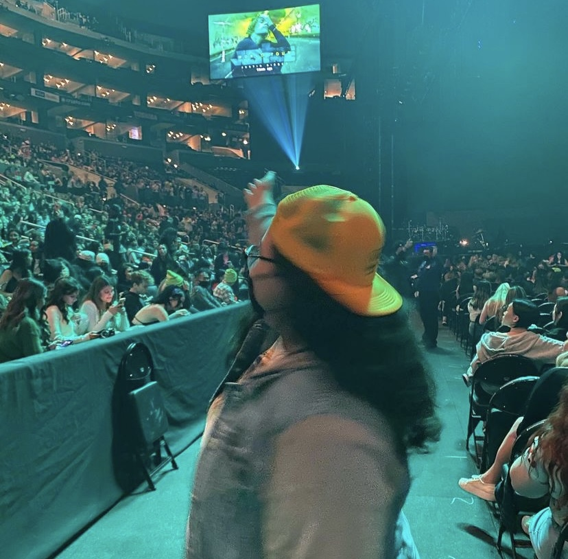
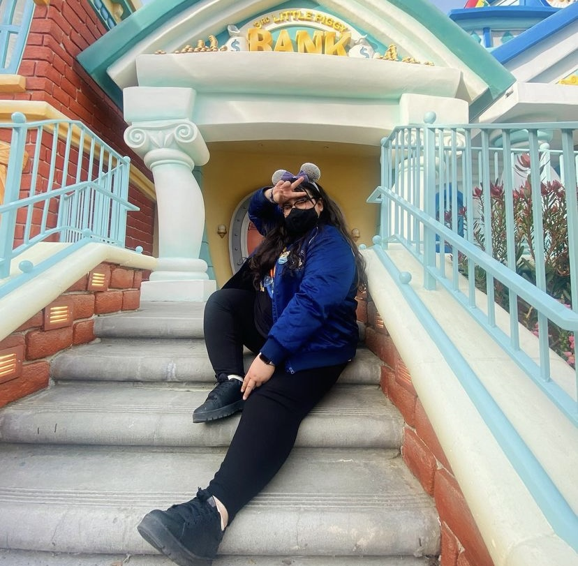
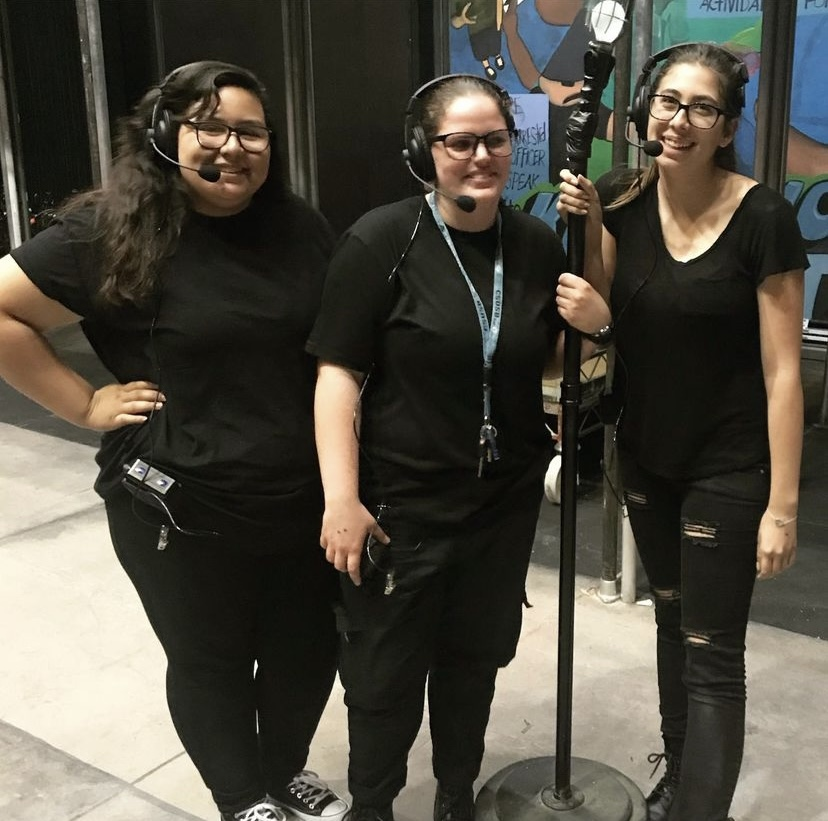
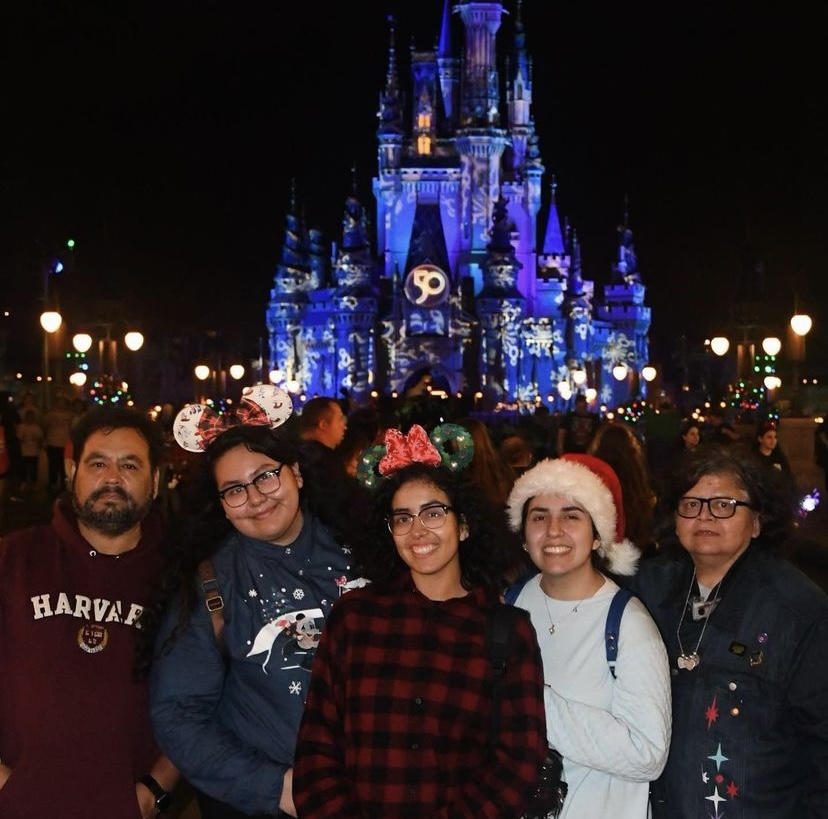
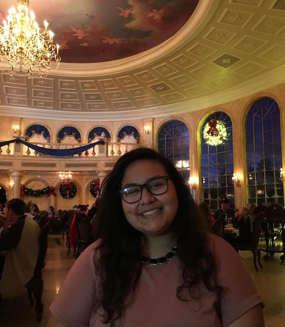
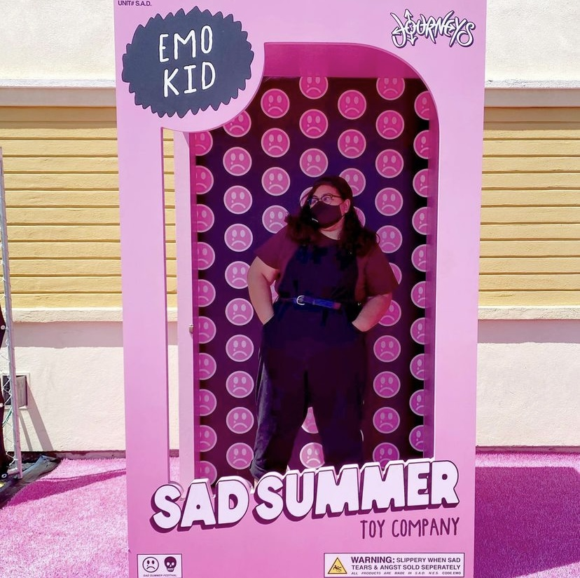

Monica at a Justin Bieber concert. She has attended over 30 concerts and has worked over 100. Her latest concert was Fall Out Boy and will be seeing Waterparks + Avril Lavigne next.

Toontown is one of Monica's favorite places in Disneyland to take photos. She loves the colors and the archetictures of the buildings. She also loves Mickey's and Minnie's Runaway Railway attraction.

When Monica is not watching productions, she loves to work on them. She has been an assistent stage manager, as well has worked on sound.

Monica loves going out to Disney parks with her family. She has been to all the parks in Florida and California and hopes to visit the parks in Paris next.

Monica trying Disney's Be Our Guest Restaurant for the first time. She loves trying new Disney treats and trying food around her local area.

Monica at Sad Summer Festival 2022. She loves going to summer festivals and has even been to the Vans Warped Tour when it was still running.